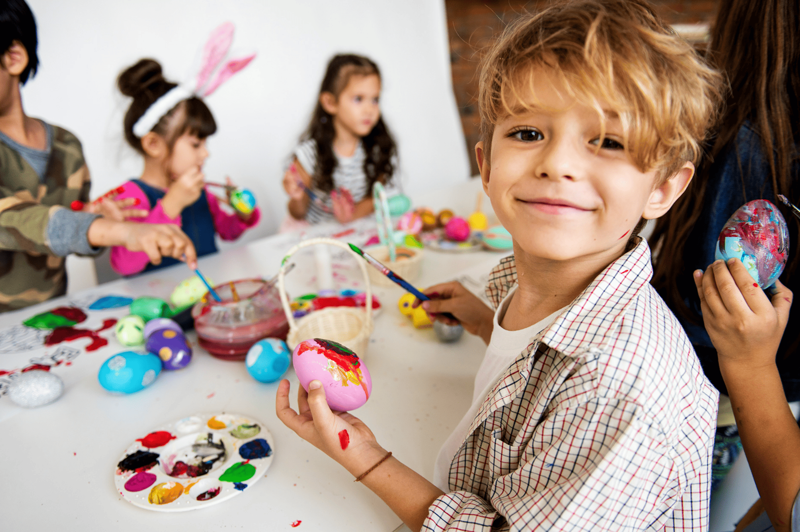
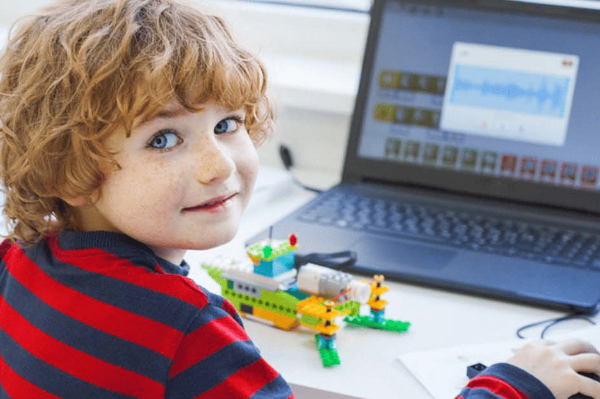

Kursus Unggulan

🎨 Menggambar & Mewarnai

🧠 Matematika Seru
🧪 Sains Eksperimen

Otak Atik adalah platform edukasi kreatif untuk anak-anak yang ingin belajar sambil bermain. Di sini, anak-anak bisa mengeksplorasi berbagai bidang dengan cara yang menyenangkan dan interaktif!
Ayo bergabung bersama ribuan anak lainnya dan mulai petualangan belajarmu sekarang di Otak Atik!
Materi yang interaktif dan mudah dipahami
Pengajar berpengalaman dan ramah anak
Kelas beragam untuk mengembangkan minat dan bakat
Aktivitas seru yang bikin anak betah belajar
Sertifikat kelulusan sebagai bentuk apresiasi
Otak Atik lahir dari semangat untuk menciptakan ruang belajar yang aman, menyenangkan, dan penuh warna untuk anak-anak. Kami percaya bahwa setiap anak memiliki potensi unik, dan dengan metode belajar yang tepat, mereka bisa berkembang dengan maksimal.
Kami menyediakan berbagai kelas edukatif yang tidak hanya mengajarkan teori, tetapi juga mendorong anak untuk berpikir kritis, berimajinasi, dan berkreasi. Semua materi disusun oleh tim profesional pendidikan anak dan dirancang khusus sesuai usia dan perkembangan mereka.
Menjadi platform edukasi anak yang inovatif, menyenangkan, dan menginspirasi generasi masa depan.
"Awalnya Nara gampang bosan kalau belajar, tapi sejak ikut kelas Otak Atik, dia malah semangat terus! Katanya, belajar sekarang kayak main. Aku pun jadi lebih tenang liat dia happy."
hello@otakatik.com
+62 812-3456-7890
Kantor Pusat
Gedung EduTech Level 3
Jl. Ceria Anak No. 12, Jakarta Selatan
DKI Jakarta, 12345, Indonesia
Telah hadir 20 cabang di seluruh Indonesia
Bandung | Bali | Batam | Bekasi | Bogor | Cirebon | Denpasar | Jakarta Selatan | Lampung | Malang | Makassar | Maluku | Manado | Medan | Palembang | Pekanbaru | Solo | Surabaya | Yogyakarta